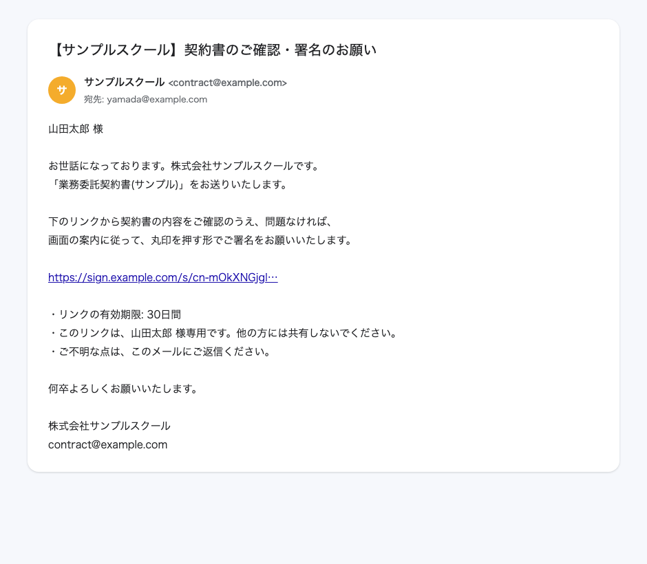
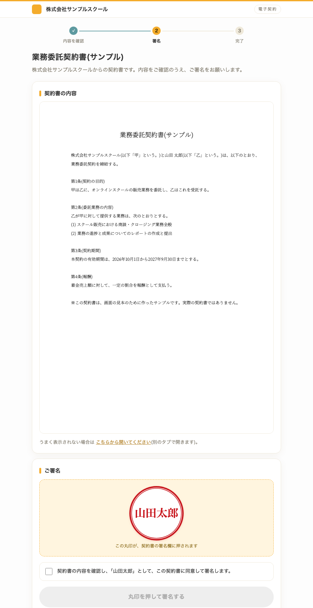
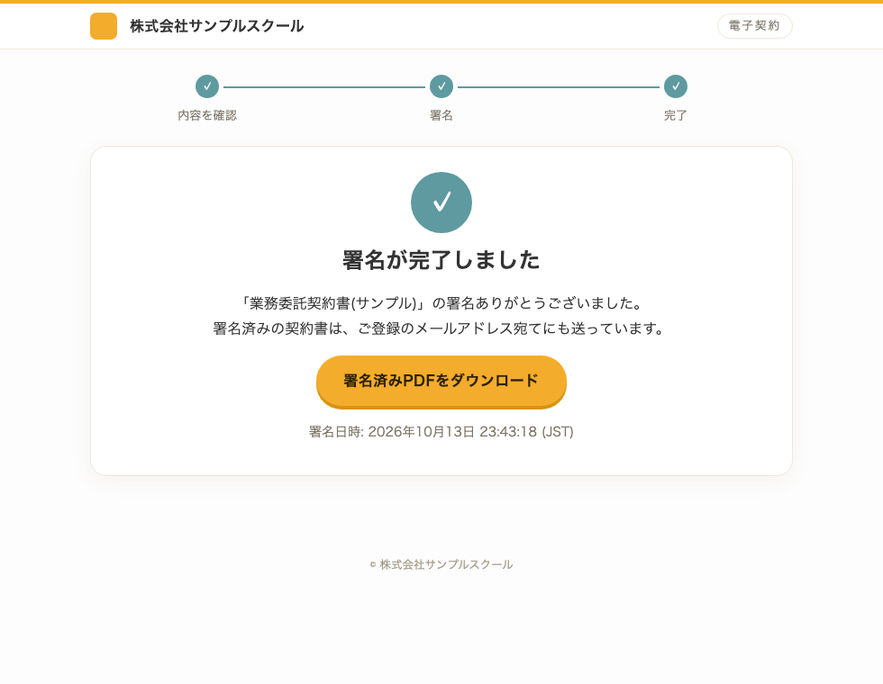
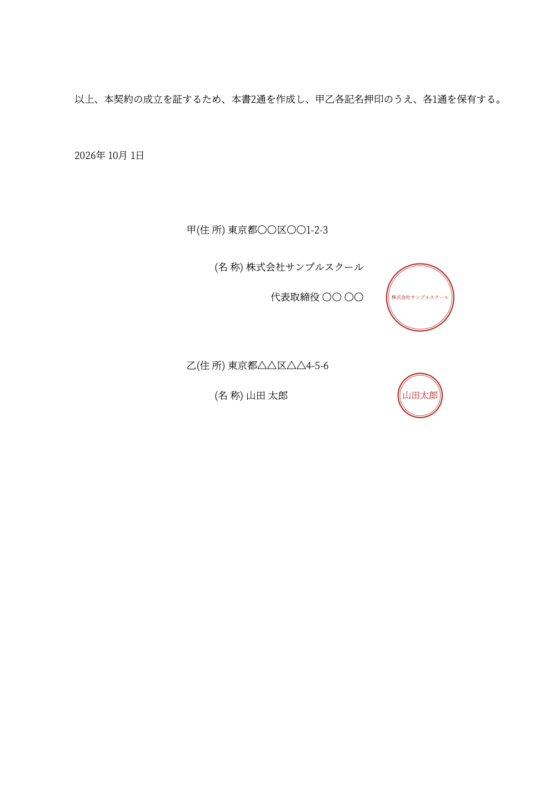
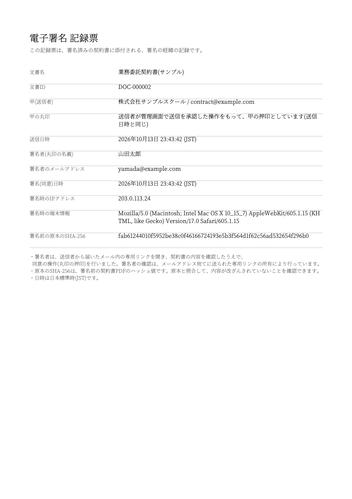

FDEの事例 02
営業会社の
契約締結業務
営業を行う会社で、業務委託契約の作成から署名の依頼、署名後の記録までを1つの仕組みにまとめました。1件あたりの作業時間は約20〜30分から約5分になる見込みです（試算）。
公開 2026.10.13 更新 2026.10.13
約8割
1件あたりで見込んでいる
作業時間の削減（試算）
約1日
仕組みづくりに
かかった期間
4工程
まとめた
契約まわりの作業
CASE 02
1件20〜30分の契約業務を
約5分に（試算）
どんな業務でしたか？
代表がプロジェクトマネージャーとして関わっている、営業を行う会社の事例です。業務委託で人を迎えるたびに、契約書の作成、電子契約サービスでの送信、相手への連絡を手作業で行っていました。件数は月に10〜30件ほどで、毎回、雛形のコピー、氏名・住所・日付の入力、PDFの書き出し、サービスへのアップロード、宛先の入力、連絡の文章づくりが必要でした。契約中のプランでは、電子契約サービスの自動連携が使えず、プランを上げるほどではない、という状況でした。
何をどう変えましたか？
| 業務 | これまで | いま |
|---|---|---|
| 契約書の作成 | 雛形をコピーし、氏名・住所・日付を手で入力してPDFに書き出し | 氏名・住所・開始日を伝えるだけ。AIが雛形に差し込み、内容を見せてからPDFを作成 |
| 署名の依頼 | 電子契約サービスにログインし、PDFをアップして宛先を入力し、送信 | PDFと宛先を入れ、確認画面で「送信」を押すだけ。依頼メールは自動で送られる |
| 署名と押印 | 相手がサービス上で署名。契約書への押印の見た目は、サービス任せ | 相手が丸印を押して署名。署名欄の位置に、会社と相手の丸印をAIが自動で押す |
| 完了後の連絡と記録 | 連絡の文章をその都度つくり、署名済みの契約書を自分で保管 | 完了メールと署名済みPDFが自動で届く。署名日時・IP・原本の識別値の記録票つき |
どんな流れで動きますか？
- 契約情報を伝える氏名・住所・契約開始日と、契約書の種類（アポイント・クローザーなど）をチャットで伝えます。
- AIが契約書を作る雛形に差し込み、入れる内容を先に見せます。承認すると、体裁を確認したPDFを作ります。
- アプリから署名を依頼するPDFと宛先を入れ、確認画面で内容を見て「送信」を押します。相手には、専用リンクのメールが届きます。
- 相手が丸印を押して署名する内容を確認し、チェックを入れて丸印を押します。署名欄の位置に、会社と相手の丸印が自動で押されます。
- 完了と記録署名済みPDFと記録票が、双方にメールで届きます。署名の日時とIPアドレス、署名前の契約書の識別値が残ります。
実際の画面はどう見えますか？





※ 画面は、会社名・氏名・契約内容を入れ替えた見本です。実際の契約書や個人情報は含まれていません。
AIと人の線引きはどうしていますか？
AIが行うのは、契約書の作成、PDFの作成、送信の準備、署名後の記録までです。契約内容の決定、宛先と内容の最終確認、「送信」を押すことは、担当の方が行います。送信は、確認のチェックを入れないと押せない作りにしています。なお、署名する方の本人確認は、メールで届く専用リンクの所有によるもので、第三者が署名を証明する電子契約サービスとは仕組みが異なります。そのぶん、署名の日時・IPアドレス・原本の識別値を記録票に残しています。
数字はどう読めばよいですか？
※ 時間の数字は実測ではなく試算です。これまでの作業を1件20〜33分、いまの作業を約5分（契約書の作成の確認が約3分、送信の確認が約1.5分、連絡文のコピーが約0.5分）と見ています。月10〜30件の想定です。動作確認は2026年10月に完了しており、本番での運用開始はこれからです。実測の数字が取れしだいこのページを更新します。
ご提案の流れ
Proposal
ご相談のあと、御社専用の提案ページをお送りします。
STEP 1
01
ご相談。オンラインで60分ほど、いまの業務と時間のかかっている所を伺います。
STEP 2
02
御社専用の提案ページ。伺った内容をもとに、業務ごとの現状・自動化の案・削減できる時間の見込みを1つのページにまとめてお送りします。
STEP 3
03
範囲を決めてスタート。提案ページを見ながら、どこから始めるかを一緒に決めます。
※ 費用は対象の業務の数と内容によって変わります。提案ページのなかでお見積りをお出しします。
※ 削減できる時間の保証は設けていません。